Calm
8:15 PM · recorded
“Made a plan, wrote it down, and I can breathe again.”
A mood diary in colour and sound
Synesthesia is a mood diary: say or type how you feel, and it paints your mood as a moving picture, plays it as a short piece of music, and keeps it on a calendar in colour.
Free · iPhone, iPad, Android, Mac, Windows · No App Store, no account
01How it works
A sentence or two is all it needs. Here is what happens after you say it.
Tap Speak and talk, then Finish. Or type it and press Render. Speaking says more: it hears how you sound, not just what you say.
Feeling, mostly from your words: how pleasant or unpleasant. Energy, mostly from your voice: how calm or charged.
It lands on the nearest of 13 moods, then paints a moving picture and plays a short melody in that mood’s own scale and tempo.
Turn the diary on once, and every finished piece is kept with the time and your words. Each day takes its latest mood’s colour.
02What it listens for
One happy-to-sad scale can’t tell calm sadness from panic, or contentment from excitement. So it reads two things at once.
FeelingFrom your words · −1 to +1
How pleasant or unpleasant. A built-in vocabulary of about 230 feeling words that understands “not”, “very” and “a bit”: “not great” is not “great”, and “really awful” is worse than “awful”.
EnergyFrom your voice · 0 to 1
How calm or charged: how loud you are, how bright your tone is, and how fast you’re talking.
With no words at all, it stays near neutral instead of inventing a feeling. The reading happens on your device; turning speech into words is your browser’s job (see Privacy).
03The 13 moods
Whatever you say lands on the nearest of thirteen moods. Each has its own colour, its own moving picture, its own line style and its own music. Every moving picture is one of Rory’s own videos.
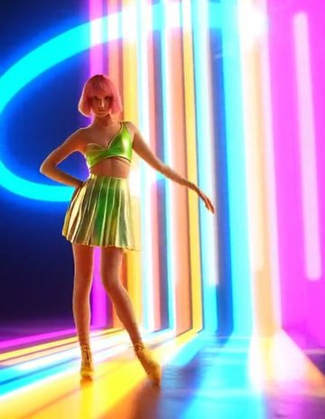
lydian · ~108 bpm
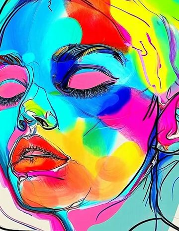
major pentatonic · ~68 bpm
major sixth · ~60 bpm
mixolydian · ~88 bpm
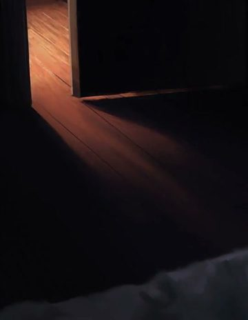
major pentatonic · ~52 bpm
mixolydian · ~66 bpm
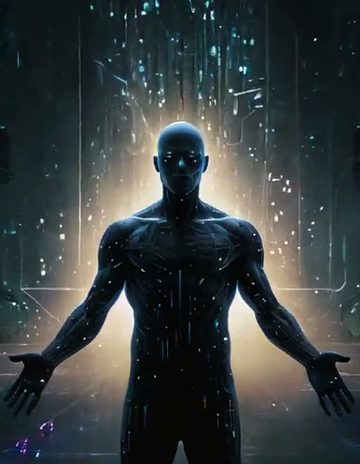
open fifths · ~46 bpm
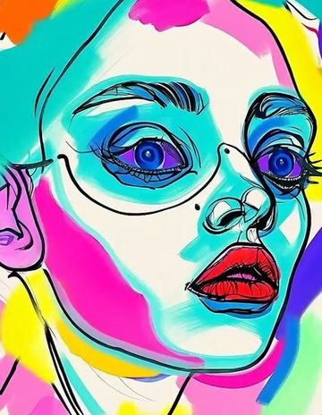
dorian · ~72 bpm
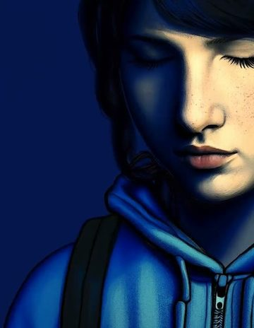
natural minor · ~54 bpm
minor pentatonic · ~50 bpm
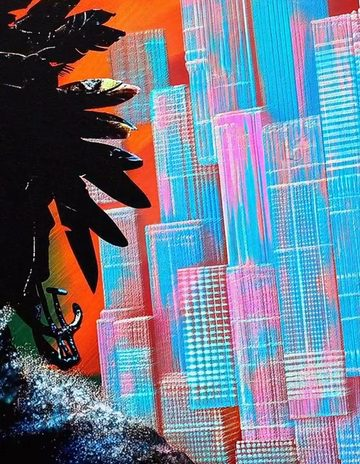
phrygian · ~112 bpm
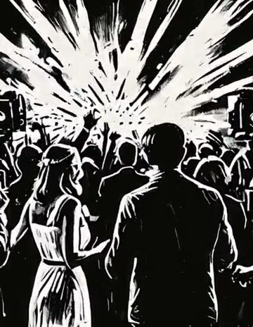
diminished · ~126 bpm
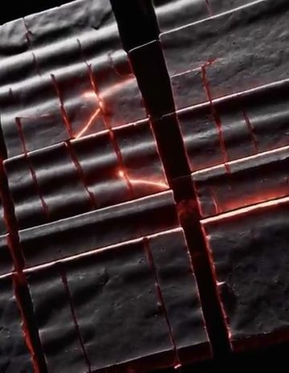
phrygian dominant · ~132 bpm
How the colours move
Colours travel from indigo through violet and rose to amber as the feeling rises. Agitated moods break into more colours and sharper angles; good moods, into sweeping curves.
No two pieces play the same phrase.
04Your diary
Turn the diary on once and every finished piece is added, with the time. Each day takes its latest mood’s colour; a small dot means more than one entry.
September 2026
more than one entry
Opened · 2026-09-24
Thursday, September 24
2 entries · newest first
Calm
8:15 PM · recorded
“Made a plan, wrote it down, and I can breathe again.”
Anxious
7:45 AM · recorded
“Woke up at four with my mind racing about money.”
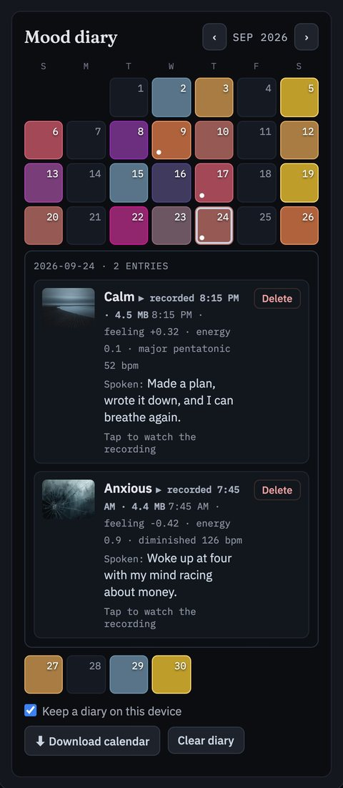
Recorded as it plays
Every piece is recorded as it plays, picture and music together, and kept with its entry. Watch the recording, or replay it live: same mood, same painting, same melody.
JPG or video
Keep the picture as a JPG, or save the whole piece, picture and music, as a video.
A .ics calendar file
Download your diary as a calendar file. It opens in Apple Calendar, Google Calendar or Outlook, with one event per entry.
Any time
Delete an entry or a recording, or clear the whole diary, whenever you like.
05Privacy
Your diary and its recordings are stored on your device, in your browser’s storage. There’s no account, no sign-up and no ads, and your diary is never sent to a server.
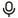
One honest exceptionTurning speech into words is done by your browser’s built-in speech recognition, and some browsers (Chrome, for example) send the audio to their speech service to do it. If you’d rather nothing you say leaves your device, type instead.
06Get the app
No App Store, no Google Play, no account. Once installed, Synesthesia has its own icon, opens full-screen like any app, and works offline.
Free · iPhone, iPad, Android, Mac, Windows · No App Store, no account
Works offline
Typing always works offline. Spoken words need a connection in some browsers.
Which browsers
Speech-to-words works in Chrome, Edge and Safari. Firefox reads your tone but not your words; typing works everywhere.